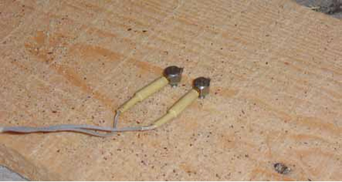

2.1. Ventajas del secado
La madera antes de usarse debe secarse a valores inferiores al 18% de contenido de humedad, para lograr las siguientes ventajas:
- Reducir significativamente su peso.
- Aumentar su resistencia mecánica natural, se hace más rígida y resistente.
- Evitar que se contraiga y deforme cuando se pone en servicio
- Aumentar su resistencia al biodeterioro.
- Mejorar la adherencia de acabados y recubrimientos.
2.2. Procesos de secado
La madera puede secarse al aire libre, o bien, en estufa, siendo preferido que sea por el segundo sistema para asegurar un bajo nivel de contenido de humedad y que se le hayan aplicado los procesos de acondicionamiento. Para saber si la madera ya está seca (menor al 18%), se debe usar un medidor de humedad para madera.
